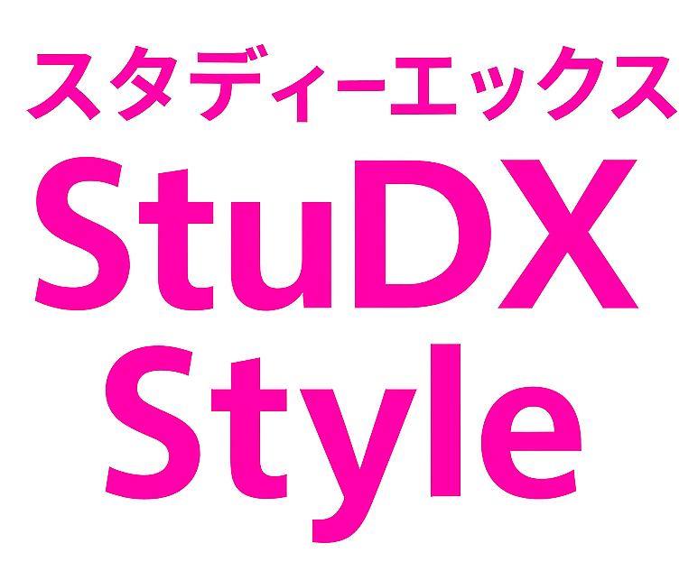
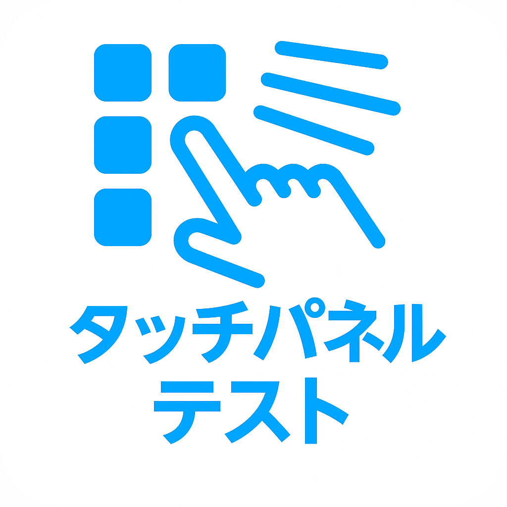
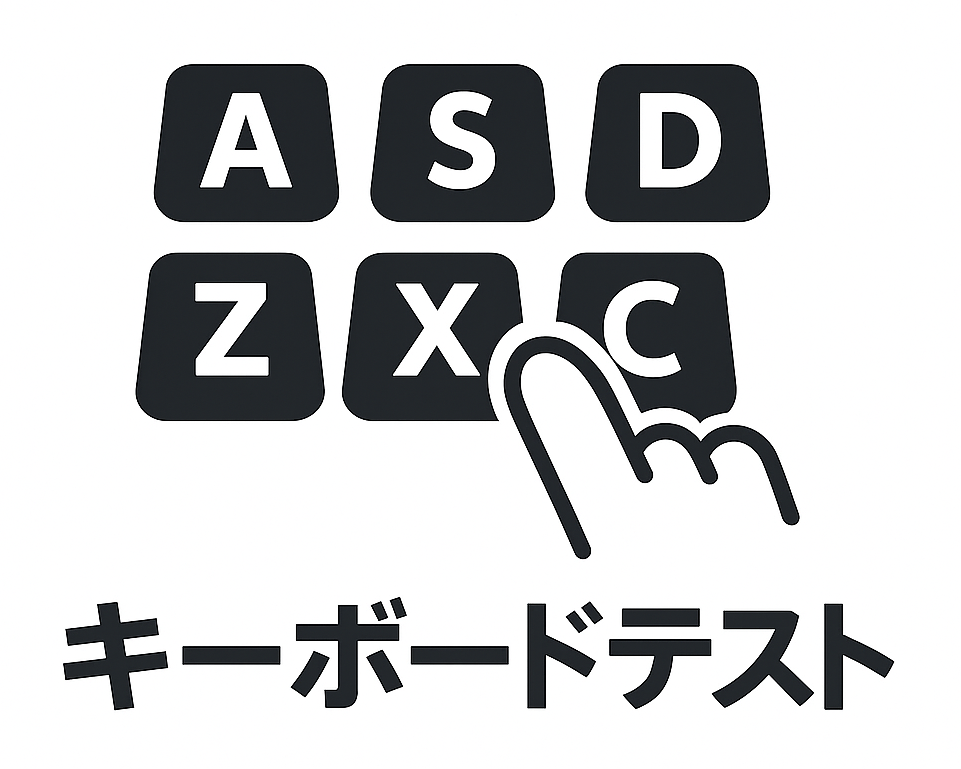
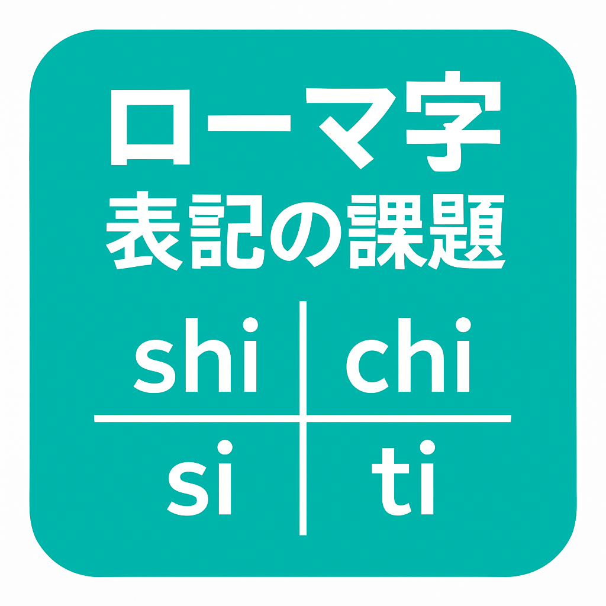
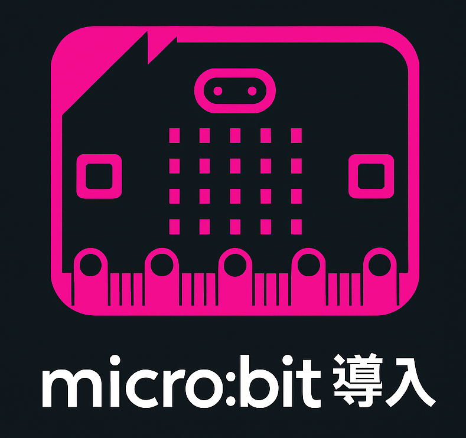
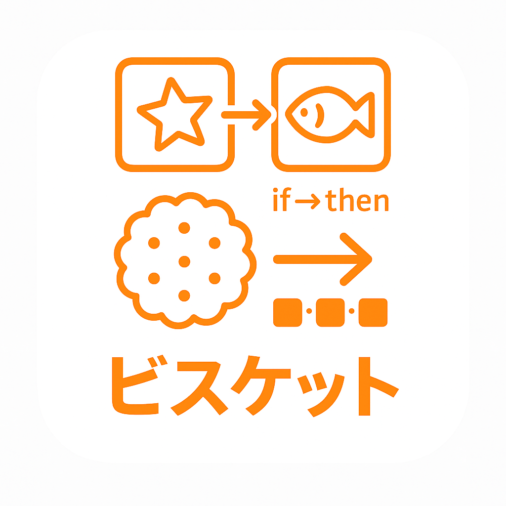
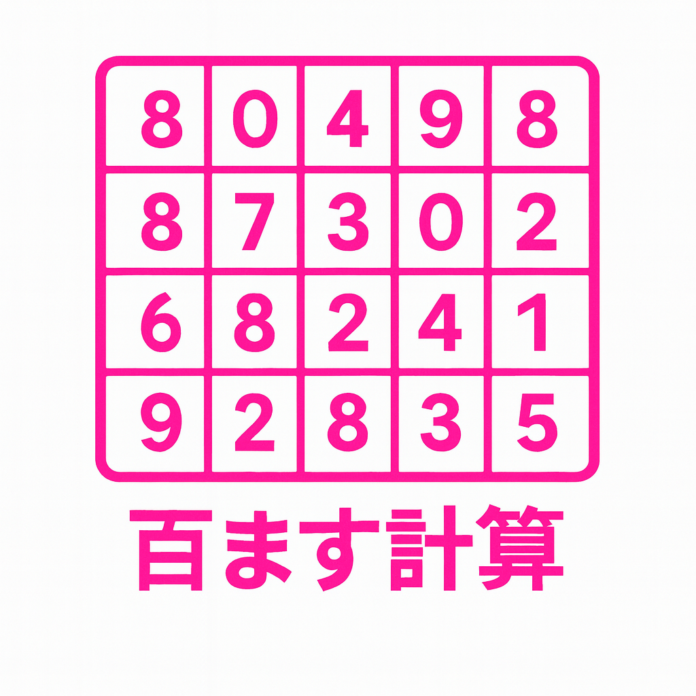

✨ ICTポータル
今日からはじめる - クリックして探索してください
NEW
プログラミングポータル
小学校のプログラミング教育に役立つ情報集

StudXStyle by MEXT
文科省の情報発信サイト
学校DX化でわくわくをサポート
先生のための授業・教材研究を支援する情報プラットフォーム
ICTインフォグラフィック
未来の教育提案

タッチパネルテスト
タブレットのタッチ動作を確認

キーボードテスト
タブレットのキーボード動作を確認

ローマ字表記の課題
言語教育の改善

micro:bit購入プラン
プログラミング教育
AI教育コンテンツハブ
人工知能との学び

ビスケット授業計画
プログラミング入門

NEW
百マス計算アプリ
一桁の足し算・引き算を素早く計算練習
NEW
タブレットのお約束
はじめてのパソコン 小学校1年生との約束
NEW
Google検索のAIモードについて
GIGAタブレットでのAI活用に関する提言
NEW
生成AIパスポート
安全かつ効果的に生成AIを使うための利用ガイド
NEW
Google Workspace活用
GIGAタブレットでの効果的な活用法
NEW
生成AIの年齢制限
安全な生成AI利用のための年齢制限に関する考察
© 2025 ICTコンテンツポータル. All rights reserved.